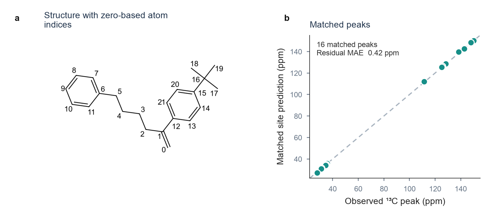

Peak-to-atom assignment
Expanded NMR evaluations include all held-out experimental sites, all eligible cross-solvent pairs, and 2,048-candidate retrieval.
Assign measured NMR peaks to atoms in a known molecular structure.
Experimental ground truth
The frozen NMRNet assignment was scored on a structure-held-out sample of 256 NMRShiftDB connectivities per nucleus. For ¹H, 1,289 of 2,009 observed shifts across 280 spectra were assigned to the labelled or symmetry-equivalent attached heavy atom (64.2%). For ¹³C, 2,131 of 2,576 shifts across 275 spectra matched a labelled carbon site (82.7%). Unmatched peaks and conformer failures count against accuracy. The upstream checkpoint’s exposure to these structures is unverified.
What goes in
Field |
Meaning |
|---|---|
|
Known molecular structure. |
|
1H or 13C and the measured 1D peak positions in ppm. |
|
Maximum allowed peak/site residual: default H 0.5, C 5 ppm. |
What comes out
Field |
Meaning |
|---|---|
|
Peak index → candidate atom indices, predicted ppm, residual and alternatives. |
|
Indices of unmatched peaks and predicted sites. |
A real recorded example
Inspect the input, prediction and reference for the example below. Download the JSON for the complete numerical arrays and additional examples.

SVG · PNG · Full input/output JSON


Inspect the actual input and output fields
{
"input": {
"smiles": "C=C(CCCCc1ccccc1)c1ccc(C(C)(C)C)cc1",
"nucleus": "13C",
"peaks_ppm": {
"length": 16,
"first_values": [
150.22,
148.03,
142.68,
138.28
]
},
"note": "Assigned observed peaks; unmatched indices retained in output"
},
"output": {
"smiles": "C=C(CCCCc1ccccc1)c1ccc(C(C)(C)C)cc1",
"symbol": "C",
"mapped_smiles": "[C:1](=[C:2]([C:3]([C:4]([C:5]([C:6]([c:7]1[c:8]([H:33])[c:9]([H:34])[c:10]([H:35])[c:11]([H:36])[c:12]1[H:37])([H:31])[H:32])([H:29])[H:30])([H:27])[H:28])([H:25])[H:26])[c:13]1[c:14]([H:38])[c:15]([H:39])[c:16]([C:17]([C:18]([H:40])([H:41])[H:42])([C:19]([H:43])([H:44])[H:45])[C:20]([H:46])([H:47])[H:48])[c:21]([H:49])[c:22]1[H:50])([H:23])[H:24]",
"atom_index_basis": "zero-based RDKit AddHs(input_smiles); atom-map numbers = index + 1",
"equivalence": "topological symmetry including chirality; not proof of magnetic equivalence",
"assignments": {
"length": 16,
"first_values": [
{
"peak_index": 0,
"observed_ppm": 150.22,
"atom_indices": [
15
],
"predicted_ppm": 150.09881591796875,
"absolute_error_ppm": 0.12118408203124886,
"other_sites_within_tolerance": [
1
]
},
{
"peak_index": 1,
"observed_ppm": 148.03,
"atom_indices": [
1
],
"predicted_ppm": 148.56301879882812,
"absolute_error_ppm": 0.5330187988281239,
"other_sites_within_tolerance": [
13
]
},
{
"peak_index": 2,
"observed_ppm": 142.68,
"atom_indices": [
6
],
"predicted_ppm": 142.5129852294922,
"absolute_error_ppm": 0.16701477050781932,
"other_sites_within_tolerance": [
10
]
},
{
"peak_index": 3,
"observed_ppm": 138.28,
"atom_indices": [
12
],
"predicted_ppm": 139.7798614501953,
"absolute_error_ppm": 1.4998614501953114,
"other_sites_within_tolerance": [
6
]
}
]
},
"unmatched_peak_indices": [],
"unmatched_sites": [],
"sites": {
"length": 16,
"first_values": [
{
"atom_indices": [
0
],
"predicted_ppm": 111.92984008789062
},
{
"atom_indices": [
1
],
"predicted_ppm": 148.56301879882812
},
{
"atom_indices": [
2
],
"predicted_ppm": 34.59314727783203
},
{
"atom_indices": [
3
],
"predicted_ppm": 27.1068172454834
}
]
},
"tolerance_ppm": 5.0,
"matched_fraction": 1.0,
"assignment_accuracy": null,
"accuracy_note": "Predicted assignments; experimental atom labels are not supplied."
}
}
Earlier evaluation without atom labels
Dataset / scope |
Model / variant |
Metric |
Value |
|---|---|---|---|
recorded evaluation |
recorded model |
molecules |
32 |
recorded evaluation |
recorded model |
matched_peaks |
488 |
recorded evaluation |
recorded model |
matched_peak_fraction_macro |
0.939238 |
recorded evaluation |
recorded model |
matched_residual_mae_ppm |
0.899131 |
recorded evaluation |
recorded model |
assignment_accuracy |
not measured |
Model and method
NMRNet first predicts atomwise shifts. Symmetry-related sites are grouped, then a minimum-cost matching step pairs the measured peaks with the predicted sites. The output includes atom indices, predicted shifts, residuals and alternative assignments.
Evaluate correct experimental peak-to-site assignments, counting unmatched peaks as incorrect. The assigned-site backend accepts symmetry-equivalent sites.
Reproduce
Notebook with executed figures · Quick Start
python -m openmolspec_bench run --workspace /path/to/OpenMolSpec \
--tasks nmr.assignment --limit 8 --output results/nmr-assignment-new.json
Call and adapt this model
from openmolspec.model import NMRNet
model = NMRNet.from_pretrained('/path/to/models', nucleus='13C',
python='/path/to/nmr-env/bin/python')
result = model.assign(smiles, measured_peaks_ppm)
For fine-tuning, use the NMRNet author training implementation, preparing atom-labelled structures/coordinates, target masks and train/validation LMDBs for the selected nucleus. Its atom_regloss_mae and atom_regloss_mse criteria operate on supervised target atoms. Retain the scaler/reference convention and select the checkpoint on validation data. This author training route is separate from the SDK inference facade. Peak matching then minimizes a separate assignment cost under the stated tolerances; it does not create atom-labelled training truth.
Source reports and SHA-256 fingerprints
assignment_carbon32_20261116.json — SHA-256
c3d25150e5811b8987060e147f43d9add4f729e340da420b94425766e1e76540
References
Xu, F., Guo, W., Wang, F., Yao, L., Wang, H., Tang, F., Gao, Z., Zhang, L., E, W., Tian, Z.-Q., et al. Toward a unified benchmark and framework for deep learning-based prediction of nuclear magnetic resonance chemical shifts. Nature Computational Science 5, 292–300 (2025). doi:10.1038/s43588-025-00783-z. Source
OpenDataLab. WanJuan MolSpectra, version 1.0.3. Experimental molecular spectroscopy dataset. Source